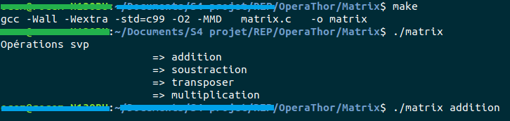
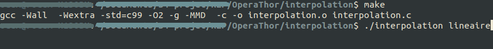
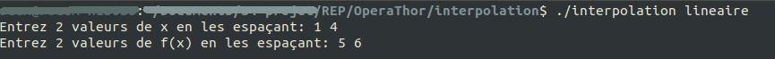
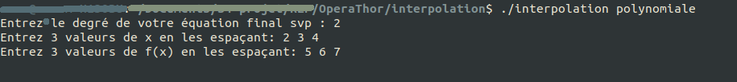
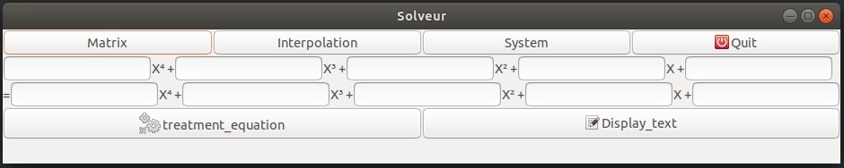
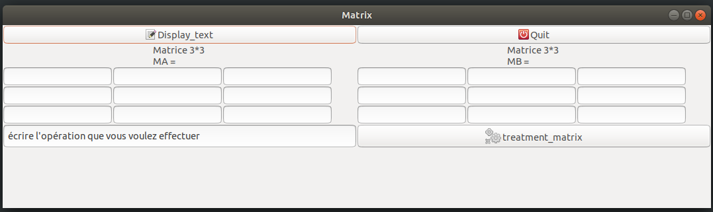
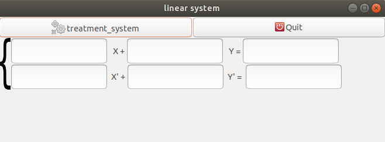

Si vous utilisez le mode terminal :
- Télécharger le dossier que vous trouverez à la page « Téléchargement ».
- Puis ouvrez un terminal et aller dans le dossier « terminal ».
- Une fois que vous vous y trouvez, écrivez « make » en ligne de commande.
- Ensuite une fois cela fait, vous devez mettre d'abord l'exécutable c'est-à-dire:
Exemple :
./operathor
- Puis pour entrer une équation d'un certain degré voici l'écriture :
Exemple :
4x^2+6x^1+3x^0=0x^0
Ce qui donne en image :
Pour avoir un exemple d'opération sur les matrices, suivez les instructions suivantes :
- Ouvrez un terminal et aller dans le dossier «
Matrix » du dossier principal.
- Une fois que vous vous y trouvez, écrivez «
make » en ligne de commande.
- Ensuite une fois cela fait, vous devez mettre d'abord l'exécutable c'est-à-dire:
Exemple :
./matrix
- Préciser quelle exemple d'opération vous voulez avoir :
Exemple :
addition
Ce qui donne en image :

Pour effectuer une interpolation linéaire ou polynômiales, suivez les instructions suivantes :
- Ouvrez un terminal et aller dans le dossier «
interpolation » du dossier principal.
- Une fois que vous vous y trouvez, écrivez «
make » en ligne de commande.
- Ensuite une fois cela fait, vous devez mettre d'abord l'exécutable c'est-à-dire:
Exemple :
./interpolation
- Préciser quelle exemple d'opération vous voulez avoir :
Exemple :
lineaire
- Pour l'interpolation linéaire on vous demandera de rentrer deux valeurs d'abscisses et d'ordonnées.
- Pour l'interpolation polynômiale selon le degré que vous rentrerez en premier il vous sera demandés un nombre différent de valeurs d'abscisses et d'ordonnées.

Ce qui donne :
=> Pour l'interpolation linéaire :

=> Pour l'interpolation polynômiales :

Si vous utilisez le mode interface :
- Télécharger le dossier que vous trouverez à la page « Téléchargement ».
- Puis ouvrez un terminal et aller dans le dossier « Interface/I/ ».
- Une fois que vous vous y trouvez, écrivez « make » en ligne de commande.
- Ensuite une fois cela fait, vous devez mettre d'abord l'exécutable c'est-à-dire:
Exemple :
./main
Une fenêtre va alors s'ouvrir comme ceci :

Comme vous pouvez le voir vous avez à votre disposition la résolution d'équation, celle matricielle, celle des systèmes linéaires et l'interpolation.
Si vous voulez faire une résolution matricielle cliquer sur le bouton «
Matrix » et une fenêtre va alors s'ouvrir.

Comme vous pouvez le voir vous avez la possibilité de choisir les valeurs de votre matrice qui possède une taille fixe. Vous devez là encore préciser si vous voulez les additionner, les transposer, les multiplier ou encore les soustraire. Puis vous cliquer sur le bouton «
treatment_matrix » qui comme son nom l'indique va vous faire votre résolution. Pour afficher celle-ci il n'y a qu'à appuyer sur le bouton «
Dislplay_text ».
Si vous voulez la résolution de système linéaire cliquer sur le bouton «
System » et une fenêtre va alors s'ouvrir.

Si vous voulez l'interpolation de points elle n'est pas encore disponible.